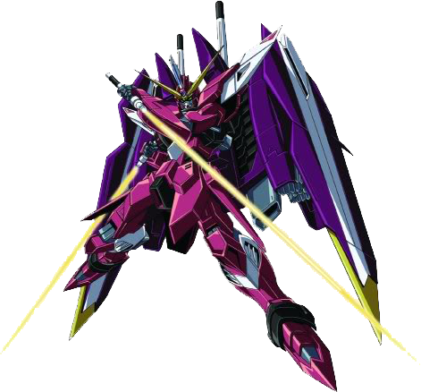
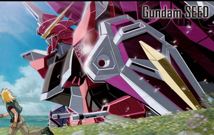
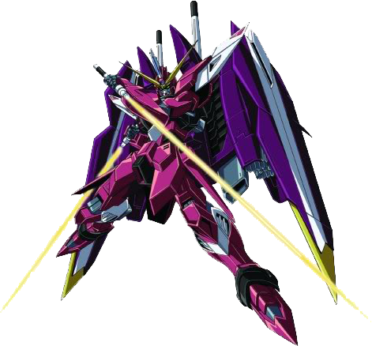
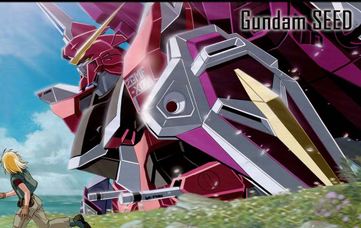

The pilot of the Infinite Justice
Athrun Zala is the pilot of the ZGMF-X19A Infinite Justice. In the series he is 20 years old. The Justice is his fourth and final Gundam.
 



Athrun Zala is the pilot of the ZGMF-X19A Infinite Justice. In the series he is 20 years old. The Justice is his fourth and final Gundam.